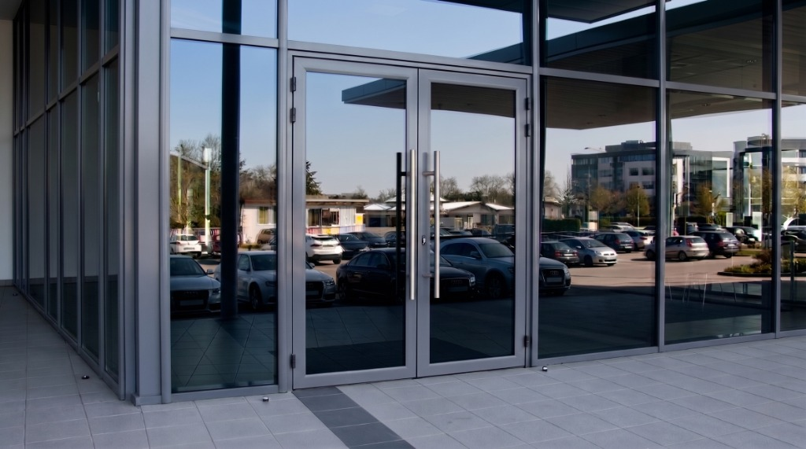
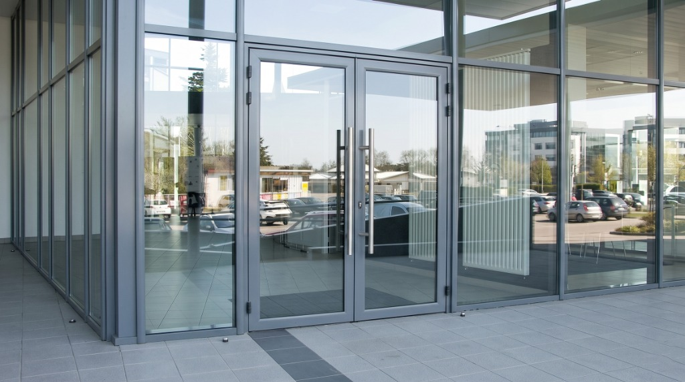

Pose de film miroir sur façade de hall d'accueil
La façade vitrée de l'entrée du bâtiment posait un double problème : une surchauffe importante et un manque d'intimité flagrant depuis le parking. Voici comment le film miroir a réglé la situation.


La situation avant l'intervention
Ce bâtiment professionnel disposait d'une façade principale entièrement vitrée au niveau de l'entrée, incluant de grandes portes doubles. Donner sur un parking dégagé apportait beaucoup de lumière, mais créait deux problèmes majeurs : une vue plongeante à l'intérieur du hall supprimant toute intimité, et une surchauffe importante dans la zone d'accueil dès que le soleil tapait sur la façade.
La solution retenue : film de contrôle solaire effet miroir
Nous avons préconisé un film de contrôle solaire à fort effet miroir. Ce type de film offre une double action particulièrement adaptée aux façades d'entrée de rez-de-chaussée : il rejette massivement l'énergie solaire avant qu'elle ne pénètre dans le bâtiment, et sa métallisation agit comme un véritable miroir sans tain en journée.
- Application sur l'ensemble de la façade vitrée et les portes d'entrée
- Blocage de la chaleur pour le confort des hôtes d'accueil et des visiteurs
- Effet miroir extérieur total : le vitrage reflète le parking et empêche de voir à l'intérieur
- Transparence conservée de l'intérieur vers l'extérieur
Déroulement de la pose
L'intervention s'est déroulée sur l'ensemble des panneaux vitrés composant l'entrée. Le résultat transforme littéralement l'esthétique du bâtiment en lui donnant un aspect beaucoup plus moderne et premium, tout en réglant définitivement le problème de confidentialité depuis le parking extérieur.
Pour une configuration similaire
Si la façade de vos locaux professionnels offre une vue trop directe depuis la rue ou un parking, le film miroir est la solution la plus radicale et esthétique. Il protège votre personnel des regards indiscrets et de la chaleur d'un seul coup, sans occulter la lumière ni nécessiter de travaux lourds.
Vous avez une situation similaire ?
Voici pourquoi des dizaines de professionnels en Auvergne-Rhône-Alpes ont fait appel à nous.